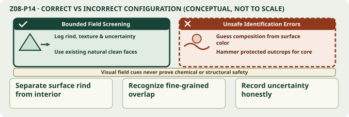

Z08-P14 · Rocks, minerals and materials · New manuscript
Weathered Rinds, Patinas and Limits of Field Identification
Prevent false rock identification caused by rust staining, lichen cover, desert/river varnish, and fine-grained dark textures.
When it applies · All field geology screening where laboratory petrography and chemical assay are unavailable.
Equipment · 10x hand lens, water drop for dust-free observation, notebook.

Actions
- Recognize that oxidation rinds, moss, lichen, and stream algae routinely mask true rock color, grain texture, and mineral cleavage.[R03, R04]
- Treat fine-grained dark rocks—including basalt, dark chert, diabase, and argillite—as provisional field calls unless natural unweathered fractures confirm diagnostic traits.[R03, R05, R19]
- Document uncertain specimens as unidentified rather than guessing composition, chemical safety, or tool suitability.[R04, R14, R19]
Failure recognition · Smashing protected outcrops to see fresh rock or assuming rusty surface patina proves iron ore damages resources and misleads identification.[R03, R08, R14]
Verify · Field records explicitly note weathered-surface limits and flag fine-grained matches as provisional pending curator review.[R03, R19]
Stop or change course · Stop field identification and withhold material use whenever diagnostic grain or fracture cues remain obscured.[R03, R14, R19]
Evidence and editorial notes
- R03 · USGS · Collecting Rocks: Rock Classes and Mineral Property Basics (USGS GIP)
- Section: Igneous, sedimentary, and metamorphic rock classes · Conditions: Field rock class screening without laboratory petrography
Support: Observable grain interlocking, layering, bedding, or foliation helps separate broad rock classes.
Limitations: Weathered rinds and fine-grained dark rocks frequently mimic other classes visually; hand-lens inspection is preliminary only. · Conflicting evidence: None noted.
Editorial note: Establishes non-destructive classification limits. · Specialist reviewer: Field geologist
Primary source · checked 2026-11-25
Current assessment · A04-R03 (2026-11-25) · Bounded support confirmed (A04): Grain arrangements, bedding and foliation can help screen broad classes. Classification also depends on origin and composition. Limits: Specialist review PENDING (Field geologist); publication HOLD. All release decisions pending. - R04 · USGS · Collecting Rocks: Rock Classes and Mineral Property Basics (USGS GIP)
- Section: Hardness, luster, streak, and fracture vs cleavage · Conditions: Non-destructive mineral observation with simple field cues
Support: Scratch hardness, unglazed streak, luster, and fracture-versus-cleavage patterns narrow candidate mineral groups.
Limitations: Field scratch checks cannot establish chemical purity, trace heavy metals, or absence of hazardous fibers. · Conflicting evidence: Color alone is unreliable across quartz, calcite, and feldspar varieties.
Editorial note: Core Z08 mineral screening basis. · Specialist reviewer: Mineralogist
Primary source · checked 2026-11-25
Current assessment · A04-R04 (2026-11-25) · Bounded support confirmed from an alternate source (A04): The properties are identification clues. A record of an existing surface is preferred and a destructive field test cannot establish use safety. Limits: Specialist review PENDING (Mineralogist); publication HOLD. All release decisions pending. - R05 · Minnesota DNR · Rocks and Minerals of Minnesota Educational Guide (Current web edition)
- Section: Chert, jasper, agate, and quartz occurrences · Conditions: Upper Midwest siliceous cobbles and sedimentary nodules
Support: Cryptocrystalline quartz varieties (chert, flint, jasper, agate) are hard silica rocks showing conchoidal fracture rather than planar cleavage.
Limitations: Visual similarity to fine-grained quartzite, basalt, or glass does not confirm thermal stability or structural suitability. · Conflicting evidence: None noted.
Editorial note: Anchors Z08 siliceous stone identification. · Specialist reviewer: Geologist and materials specialist
Primary source · checked 2026-11-25 - R08 · National Park Service / eCFR · 36 CFR 2.1 Preservation of Natural, Cultural and Archeological Resources (Current CFR)
- Section: 36 CFR 2.1 natural resource collecting prohibitions · Conditions: National Parks, Monuments, and federal recreation areas
Support: Collecting rocks, minerals, fossils, wood, or natural specimens is prohibited on National Park System lands unless specifically authorized.
Limitations: Rules vary across USFS, BLM, state, tribal, county, and private lands; check the governing land manager before taking any sample. · Conflicting evidence: None noted.
Editorial note: Prevents unlawful federal resource extraction. · Specialist reviewer: Public-lands resource manager
Primary source · checked 2026-11-25 - R14 · USGS · National Minerals Information Center and Mineral Commodities (Current web edition)
- Section: Metallic ores, sulfides, and heavy-metal mineral toxicity · Conditions: Unidentified metallic-luster minerals, tailings, or bright oxidized crusts
Support: Sulfide ores and metallic minerals can contain lead, arsenic, mercury, or copper compounds hazardous via dust or hand-to-mouth transfer.
Limitations: Do not taste, lick, burn, or process unidentified metallic or brightly crusted minerals; wash hands after handling. · Conflicting evidence: None noted.
Editorial note: Blocks hazardous mineral extraction/handling. · Specialist reviewer: Geochemist and toxicologist
Primary source · checked 2026-11-25
Current assessment · A04-R14 (2026-11-25) · Open: support partial or missing (A04): No exposure or toxicological operator section for the combined ore claim. Need exact material mineralogy and mapped site exposure. Limits: Specialist review PENDING (Geochemist and toxicologist); publication HOLD. All release decisions pending. - R19 · USGS · Collecting Rocks: Rock Classes and Mineral Property Basics (USGS GIP)
- Section: Specimen documentation, scale, and locality recording · Conditions: Documenting geological specimens for reference or museum review
Support: Recording locality, host formation, metric scale, fresh vs weathered surface, and non-destructive traits preserves scientific value.
Limitations: A photograph or hand sample without locality and scale rarely permits definitive identification of fine-grained rocks. · Conflicting evidence: None noted.
Editorial note: Defines Z08 specimen voucher protocol. · Specialist reviewer: Curatorial geologist
Primary source · checked 2026-11-25
Source lineage · New manuscript (Z08 P16 identification limits) · Classification · New manuscript.